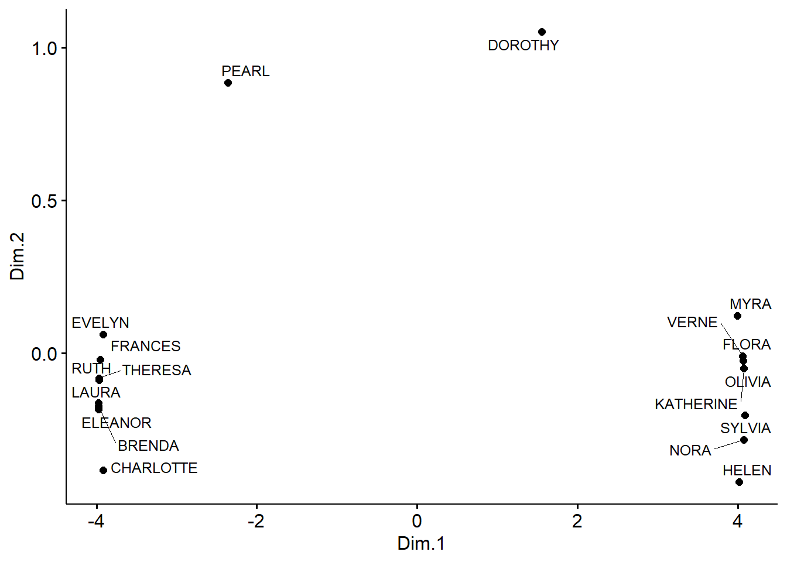
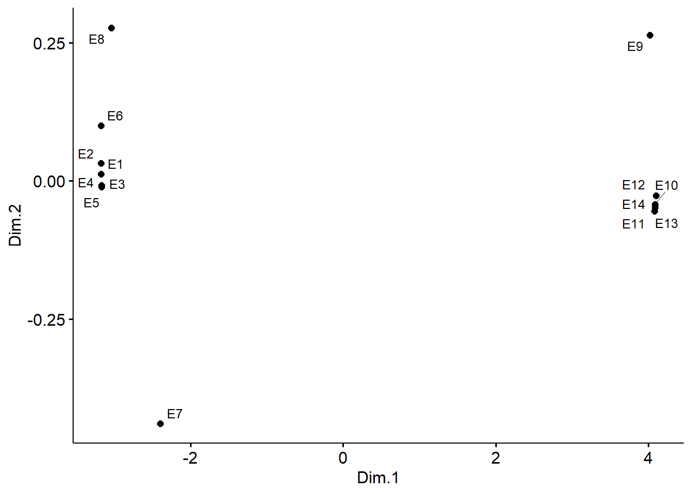

Implementation of Kovacs’s Generalized Model of Relational Similarity for R
Introduction
In an insightful, and somewhat overlooked paper published in Social Networks, Kovacs (2010) introduced a generalized relational similarity measure based on iterated correlations, applicable to two-mode and one-mode network data. This page provides a brief description of Kovacs’s approach, and introduces an implementation of his proposed algorithm as a function for the R statistical computing environment.
According to Kovacs, a desirable generalized similarity measure must have two desirable properties.
- First, it should respect the principle of equivalence, such that it classifies actors as similar if they have similar relations to other objects who are themselves similar.
- Second, the similarity measure should respect the principle of duality (Breiger, 1974), such that it classifies actors as similar if they have similar relations to similar objects, and objects as similar if they have similar relations to similar actors within the same system.
The Correlation Distance as a Function of Row and Column Profiles
Kovacs’s main observation is that such a generalized relational similarity measure could be obtained by transforming the usual correlation distance measure. Particularly, Kovacs begins by noting that in the two-mode case, the correlation distance between any pair of actors \(D(A)^{cor}_{i,j}\) be expressed as a function of their row profiles in actors \(\times\) objects affiliation matrix \(\mathbf{M}\) as follows:
\[ D(A)^{cor}_{i,j} = \frac{ (M_{i\bullet} - \bar{M_{i\bullet}}) (M_{j\bullet} - \bar{M_{j\bullet}})^T } { \sqrt{ (M_{i\bullet} - \bar{M_{i\bullet}}) (M_{i\bullet} - \bar{M_{i\bullet}})^T (M_{j\bullet} - \bar{M_{j\bullet}}) (M_{j\bullet} - \bar{M_{j\bullet}})^T } } \tag{1}\]
Where \(M_{i\bullet}\) is the row profile corresponding to actor \(i\), \(M_{j\bullet}\) is the row profile corresponding to actor \(j\), \(\bar{M_{i\bullet}}\) is the row mean for actor \(i\), and \(\bar{M_{j\bullet}}\) is the row mean for actor \(j\) in the affiliation matrix.
The same approach can be used to find the correlation distance between any two column objects \(D(O)^{cor}_{i, j}\), by substituting their column profiles \((M_{\bullet i}, M_{\bullet j})\) and column means \((\bar{M_{\bullet i}}, \bar{M_{\bullet j})}\) into equation Equation 1.
Overall, increasingly positive values of the correlation distance indicate actor similarity, while negative values indicate actor dissimilarity, with values bounded in the \((-1, 1)\) interval.
Kovacs noted that the correlation distance classifies actors as similar if they have similar relations to other objects, but fails to incorporate the inter-object similarities. That is, actors should receive more similarity ``points’’ if they connect to objects that are themselves similar. It thus fails to respect the principle of equivalence.
Generalized Similarities
Kovacs proposed that a generalized measure of relational similiarity could be obtained by tweaking the standard correlation distance formula. To this end, consider a matrix \(\mathbf{S(O)}\) with cell entries \(s(o)_{ij}\) capturing pairwise similarities between the objects in the two-mode network. In this case, a generalized relational similarity (GRS) measure for actors based on the correlation distance can be expressed as:
\[ D(A)^{grs}_{i,j} = \frac{ (M_{i\bullet} - \bar{M_{i\bullet}}) \mathbf{S(O)} (M_{j\bullet} - \bar{M_{j\bullet}})^T } { \sqrt{ (M_{i\bullet} - \bar{M_{i\bullet}}) \mathbf{S(O)} (M_{i\bullet} - \bar{M_{i\bullet}})^T } \sqrt{ (M_{j\bullet} - \bar{M_{j\bullet}}) \mathbf{S(O)} (M_{j\bullet} - \bar{M_{j\bullet}})^T } } \tag{2}\]
Kovacs notes that if we have access to an analogous matrix of similarities between actors \(\mathbf{S(A)}\) in the network, then we would be able to also calculate a generalized relational similarity score for objects \(D(O)^{grs}\) by plugging in that matrix and the column profiles and means into equation Equation 2, yielding:
\[ D(O)^{grs}_{i,j} = \frac{ (M_{\bullet i} - \bar{M_{\bullet i}}) \mathbf{S(A)} (M_{\bullet i} - \bar{M_{\bullet i}})^T } { \sqrt{ (M_{\bullet i} - \bar{M_{\bullet i}}) \mathbf{S(A)} (M_{\bullet i} - \bar{M_{\bullet i}})^T } \sqrt{ (M_{\bullet j} - \bar{M_{\bullet j}}) \mathbf{S(A)} (M_{\bullet j} - \bar{M_{\bullet j}})^T } } \tag{3}\]
Typically, people only have access to the network information and not exogenous indication of pre-existing similarities between actors or objects, required to compute Equation 2, and Equation 3. Kovacs’s (ingenious) solution is to use the duality property and compute “reflective similarities” by obtaining initial object similarities plugging \(D(A)^{cor}\) into Equation 3, equivalent to substituting the identity matrix, of dimensions \(O \times O\), into the slot occupied by \(\mathbf{S(O)}\) in Equation 2. Then, in a second step, using the resulting actor similarities to compute generalized object similarities. This is done by substituting an \(A \times A\) matrix of \(D(A)^{grs}\) values obtained in the first step into the slot occupied by \(\mathbf{S(A)}\) in Equation 3. The iterations continue until both \(D(A)^{grs}\) and \(D(A)^{grs}\) “freeze” according to some stopping criterion (\(\epsilon\)).
It is easy to see that Equation 2 and Equation 3 both respect the principle of equivalence. Actors count as similar to the extent they connect to similar objects (\(\mathbf{S(O)}\)). Conversely, objects count as similar to the extent they are chosen by similar actors ($ $).
Because the similarities are defined according to the dual projection method, in which the similarity of actors is based on the objects they choose, and the similarity of objects is based on the actors who choose them, Equation 2 and Equation 3 also respect the principle of duality.
| E1 | E2 | E3 | E4 | E5 | E6 | E7 | E8 | E9 | E10 | E11 | E12 | E13 | E14 | |
|---|---|---|---|---|---|---|---|---|---|---|---|---|---|---|
| EVELYN | 1 | 1 | 1 | 1 | 1 | 1 | 0 | 1 | 1 | 0 | 0 | 0 | 0 | 0 |
| LAURA | 1 | 1 | 1 | 0 | 1 | 1 | 1 | 1 | 0 | 0 | 0 | 0 | 0 | 0 |
| THERESA | 0 | 1 | 1 | 1 | 1 | 1 | 1 | 1 | 1 | 0 | 0 | 0 | 0 | 0 |
| BRENDA | 1 | 0 | 1 | 1 | 1 | 1 | 1 | 1 | 0 | 0 | 0 | 0 | 0 | 0 |
| CHARLOTTE | 0 | 0 | 1 | 1 | 1 | 0 | 1 | 0 | 0 | 0 | 0 | 0 | 0 | 0 |
| FRANCES | 0 | 0 | 1 | 1 | 1 | 1 | 0 | 1 | 0 | 0 | 0 | 0 | 0 | 0 |
| ELEANOR | 0 | 0 | 0 | 1 | 1 | 1 | 1 | 1 | 0 | 0 | 0 | 0 | 0 | 0 |
| RUTH | 0 | 0 | 0 | 1 | 1 | 0 | 1 | 1 | 1 | 0 | 0 | 0 | 0 | 0 |
| VERNE | 0 | 0 | 0 | 0 | 0 | 0 | 1 | 1 | 1 | 0 | 0 | 1 | 0 | 0 |
| MYRA | 0 | 0 | 0 | 0 | 0 | 0 | 0 | 1 | 1 | 1 | 0 | 1 | 0 | 0 |
| KATHERINE | 0 | 0 | 0 | 0 | 0 | 0 | 0 | 1 | 1 | 1 | 0 | 1 | 1 | 1 |
| SYLVIA | 0 | 0 | 0 | 0 | 0 | 0 | 1 | 1 | 1 | 1 | 0 | 1 | 1 | 1 |
| NORA | 0 | 0 | 0 | 0 | 0 | 0 | 1 | 0 | 1 | 1 | 1 | 1 | 1 | 1 |
| HELEN | 0 | 0 | 0 | 0 | 0 | 0 | 1 | 1 | 0 | 1 | 1 | 1 | 0 | 0 |
| OLIVIA | 0 | 0 | 0 | 0 | 0 | 0 | 0 | 0 | 1 | 0 | 1 | 0 | 0 | 0 |
| FLORA | 0 | 0 | 0 | 0 | 0 | 0 | 0 | 0 | 1 | 0 | 1 | 0 | 0 | 0 |
| PEARL | 0 | 0 | 0 | 0 | 0 | 1 | 0 | 1 | 1 | 0 | 0 | 0 | 0 | 0 |
| DOROTHY | 0 | 0 | 0 | 0 | 0 | 0 | 0 | 1 | 1 | 0 | 0 | 0 | 0 | 0 |
Analysis of Southern Women Data
I implemented Kovacs’s algorithm as an R function called gen.sim.corr.abs, the latest version of which can be found here. To show that it works as intended, I replicate Kovacs’s (2010) analysis of Davis et al.’s (1941) classic Southern Women two-mode network, shown in Table 1.

Figure 1 closely replicates Kovacs’s (2010, Figure 12b) using the current R implementation.The algorithm converged (using \(\epsilon = 0.001\)) after 119 iterations. Figure 1 is the result of a multidimensional scaling solution of the equilibrium similarities, with actors projected to the space formed by the first two-dimensions, computed using the function cmdscale from the package stats in R version 4.2.2.1
As Kovacs noted in the original paper, the distribution of points in the two-dimensional metric MDS space obtained using the generalized relational similarities corresponds to the generalized blockmodeling solution reported by Doreian et al. (2004, Table 4), with two large sets of similar actors separated from one another and from the more peripheral Dorothy and Pearl.
Figure 2 reports the corresponding analysis for the object (events) relational similarities. In the original paper, Kovacs (2010, p. 206), described these results verbally—no plot was provided—as follows:
The generalized similarity model provides a grouping for the events as well (not shown here). This grouping differs slightly from Doreian et al.’s grouping: although the (1, 2, 3, 4, 5) and (10, 11, 12, 13, 14) clusters emerge in the generalized similarity solution as well, the picture differs for events 6, 7, 8, and 9. Event 6 here is clustered together with (1, 2, 3, 4, 5), while events 7, 8 and 9 do not fall into any group but stand separately .

We can see that Figure 2 replicates Kocacs’s verbal description of these results to a tee.
Conclusion
Overall, this suggests that the current implementation of Kovacs’s generalized model of relational similarity works and produces results as intended. Hopefully having it available will increase the use of this relatively under-used relational technique for two-mode (and one-mode) data.
References
Breiger, R. L. (1974). The duality of persons and groups. Social forces, 53(2), 181-190.
Davis, A., Gardner, B. B., & Gardner, M. R. (1941). Deep South A Social Anthropological Study of Caste and Class. University of Chicago Press.
Doreian, P., Batagelj, V., & Ferligoj, A. (2004). Generalized blockmodeling of two-mode network data. Social networks, 26(1), 29-53.
Kovács, B. (2010). A generalized model of relational similarity. Social Networks, 32(3), 197-211.